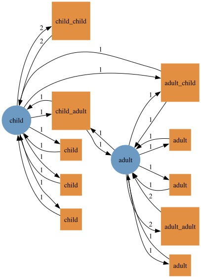
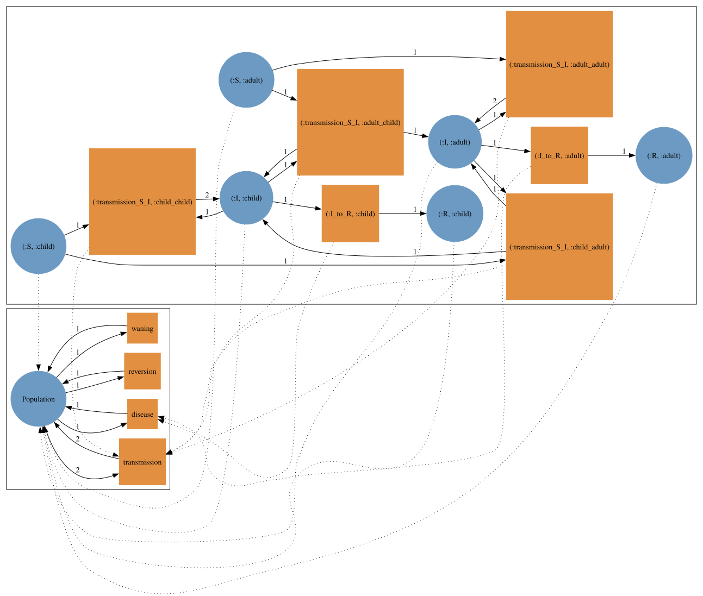
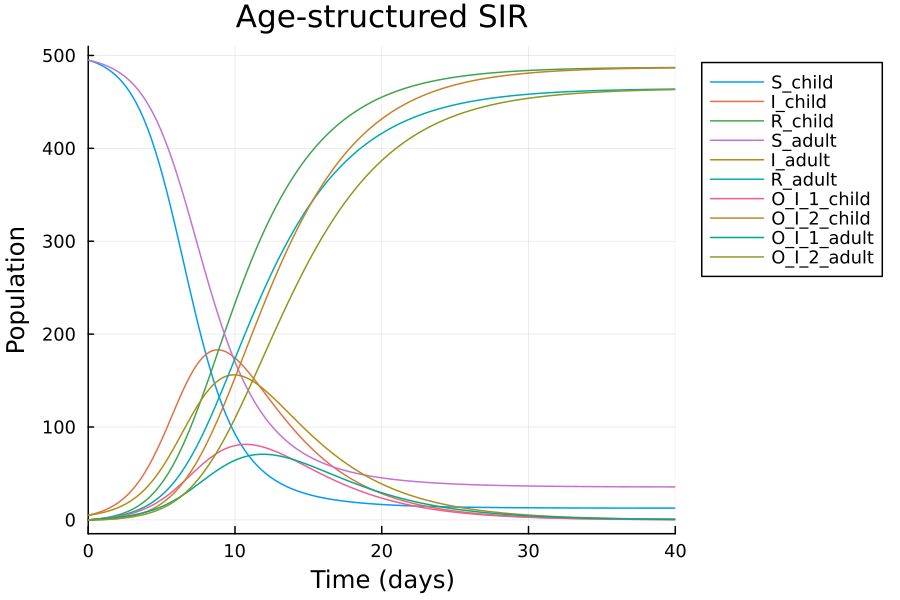
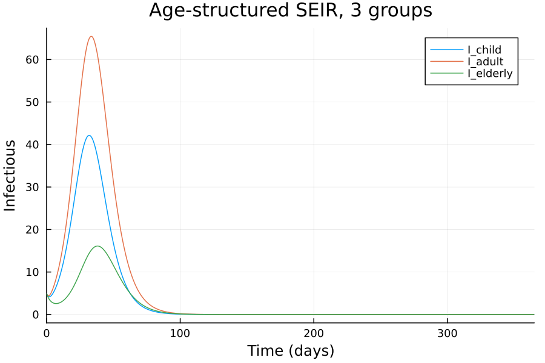
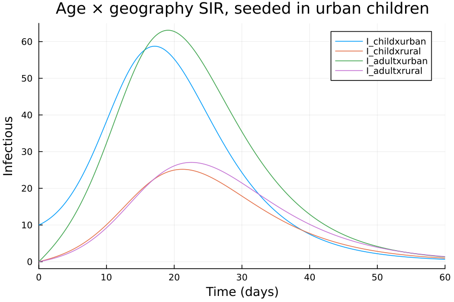

Stratified models¶
Stratification by age, place or risk group is not written by hand: a disease model and a
stratification model are built separately over the same typing and combined with
typed_product, the pullback over the type system. Every compartment is replicated per stratum,
disease progression happens within each stratum, and transmission gets one transition per
(infectee, infector) pair of strata: a full contact matrix.
using AlgebraicEpiMech
using AlgebraicPetri
using AlgebraicPetri.TypedPetri: typed_product
using Catlab
using LabelledArrays
using OrdinaryDiffEqTsit5
using Plots
using SymbolicIndexingInterface: SymbolCache
function solve_net(pn, u0, p, tspan)
f = ODEFunction(vectorfield_flat(pn); sys = SymbolCache(collect(keys(u0))))
return solve(ODEProblem(f, u0, tspan, p), Tsit5())
end
Age-structured SIR¶
The disease model and a two-group age stratification, both typed over OnePopulationTyping.
typing = OnePopulationTyping()
sir = create_model(typing, SIR())
age = AgeStratification([:child, :adult])
age_model = create_model(typing, age)
tnames(dom(age_model))
10-element Vector{Symbol}:
:child_child
:child_adult
:adult_child
:adult_adult
:child
:child
:child
:adult
:adult
:adult
The stratification's transmission transitions are named infectee_infector. It also carries
reflexive transitions (:child, :adult) for the non-transmission types, so that
typed_product keeps recovery (and progression, waning and observation) within each group.

The product has three compartments per age group, four transmission transitions and one recovery per group.

Observation is attached after composition. attach_observation is a pushout, not a factor of
the product, so it has to come last; each age group then gets its own delay chain.
age_sir_pn = attach_observation(dom(age_sir), AtCompartment(:I); n_stages = 2)
(species = flatten_symbols.(snames(age_sir_pn)), transitions = flatten_symbols.(tnames(age_sir_pn)))
(species = [:S_child, :S_adult, :I_child, :I_adult, :R_child, :R_adult, :O_I_1_child, :O_I_2_child, :O_I_1_adult, :O_I_2_adult], transitions = [:transmission_S_I_child_child, :transmission_S_I_child_adult, :transmission_S_I_adult_child, :transmission_S_I_adult_adult, :I_to_R_child, :I_to_R_adult, :O_I_1_to_O_I_2_child, :obs_inflow_I_child_child, :O_I_1_to_O_I_2_adult, :obs_inflow_I_adult_adult])
Species and transition names are tuples such as (:S, :child); vectorfield_flat flattens them
with underscores, which gives the names used in the state and parameter vectors below.
N_child, N_adult = 500.0, 500.0
u0 = LVector(
S_child = N_child - 5.0, I_child = 5.0, R_child = 0.0,
S_adult = N_adult - 5.0, I_adult = 5.0, R_adult = 0.0,
O_I_1_child = 0.0, O_I_2_child = 0.0, O_I_1_adult = 0.0, O_I_2_adult = 0.0,
)
β = 0.5
p = LVector(;
transmission_S_I_child_child = β * 1.5 / N_child,
transmission_S_I_child_adult = β * 0.8 / (N_child + N_adult),
transmission_S_I_adult_child = β * 0.8 / (N_child + N_adult),
transmission_S_I_adult_adult = β * 1.0 / N_adult,
I_to_R_child = 0.25, I_to_R_adult = 0.25,
O_I_1_to_O_I_2_child = 0.5, O_I_1_to_O_I_2_adult = 0.5,
(t => 0.25 for t in flatten_symbols.(tnames(age_sir_pn)) if startswith(string(t), "obs_inflow"))...,
)
sol = solve_net(age_sir_pn, u0, p, (0.0, 40.0))
plot(sol; xlabel = "Time (days)", ylabel = "Population", title = "Age-structured SIR", legend = :outertopright)

Setting a contact matrix programmatically¶
The transition names follow a fixed pattern, so parameters for larger models can be generated from a contact matrix instead of written out. Here is an SEIR model with three age groups.
groups = [:child, :adult, :elderly]
population = Dict(:child => 300.0, :adult => 500.0, :elderly => 200.0)
contact = [
2.0 1.0 0.3
1.0 1.2 0.5
0.3 0.5 0.6
]
N = sum(values(population))
age3_seir_pn = dom(typed_product(create_model(typing, SEIR()), create_model(typing, AgeStratification(groups))))
transmission = [
Symbol("transmission_S_I_$(a)_$(b)") => 0.5 * contact[i, j] / N
for (i, a) in enumerate(groups) for (j, b) in enumerate(groups)
]
progression = [Symbol("$(t)_$(g)") => rate for (t, rate) in (("E_to_I", 0.25), ("I_to_R", 0.2)) for g in groups]
p3 = LVector(; transmission..., progression...)
u03 = LVector(; (
Symbol("$(c)_$(g)") => (c == :S ? population[g] - 5.0 : c == :I ? 5.0 : 0.0)
for g in groups for c in (:S, :E, :I, :R)
)...)
sol3 = solve_net(age3_seir_pn, u03, p3, (0.0, 365.0))
plot(sol3; idxs = [Symbol("I_$g") for g in groups], xlabel = "Time (days)", ylabel = "Infectious",
title = "Age-structured SEIR, 3 groups")

Stacking stratifications¶
Contact stratifications compose with * (or compose_stratifications). Two age groups times
two locations gives four product strata and a 4×4 contact matrix.
geo = GeographicStratification([:urban, :rural])
age_geo = age * geo
(strata = age_geo.stratum_names, label = age_geo.label)
Building the model from the product stratification is equivalent to composing sequentially.
age_geo_sir = dom(typed_product(sir, create_model(typing, age_geo)))
sequential = dom(typed_product(typed_product(sir, age_model), create_model(typing, geo)))
(species = ns(age_geo_sir), transitions = nt(age_geo_sir), same_size_as_sequential = (ns(sequential), nt(sequential)) == (ns(age_geo_sir), nt(age_geo_sir)))
A separable contact structure (an age factor times a location factor) fills in all 16 transmission rates.
strata = [(a, g) for a in age.stratum_names for g in geo.stratum_names]
pop = Dict((:child, :urban) => 300.0, (:child, :rural) => 200.0, (:adult, :urban) => 400.0, (:adult, :rural) => 300.0)
N4 = sum(values(pop))
age_mix = Dict((:child, :child) => 2.25, (:child, :adult) => 1.05, (:adult, :child) => 1.05, (:adult, :adult) => 1.0)
geo_mix = Dict((:urban, :urban) => 1.3, (:rural, :rural) => 0.8, (:urban, :rural) => 0.3, (:rural, :urban) => 0.3)
name(a, g) = "$(a)x$(g)"
p4 = LVector(;
(
Symbol("transmission_S_I_$(name(a, g))_$(name(b, h))") => 0.4 * age_mix[(a, b)] * geo_mix[(g, h)] / N4
for (a, g) in strata for (b, h) in strata
)...,
(Symbol("I_to_R_$(name(a, g))") => 0.2 for (a, g) in strata)...,
)
u04 = LVector(; (
Symbol("$(c)_$(name(a, g))") => (c == :S ? pop[(a, g)] : 0.0) for (a, g) in strata for c in (:S, :I, :R)
)...)
u04.S_childxurban -= 10.0
u04.I_childxurban = 10.0
sol4 = solve_net(age_geo_sir, u04, p4, (0.0, 60.0))
plot(sol4; idxs = [Symbol("I_$(name(a, g))") for (a, g) in strata], xlabel = "Time (days)", ylabel = "Infectious",
title = "Age × geography SIR, seeded in urban children")

Final attack rate per stratum:
Dict(name(a, g) => round(sol4[Symbol("R_$(name(a, g))")][end] / pop[(a, g)]; digits = 3) for (a, g) in strata)
Dict{String, Float64} with 4 entries:
"adultxurban" => 0.75
"adultxrural" => 0.48
"childxrural" => 0.644
"childxurban" => 0.891
A third factor multiplies again: age × geography × risk has eight strata and 64 transmission rates, so richer stratifications call for structured (for example separable) parameterisations rather than free contact matrices.